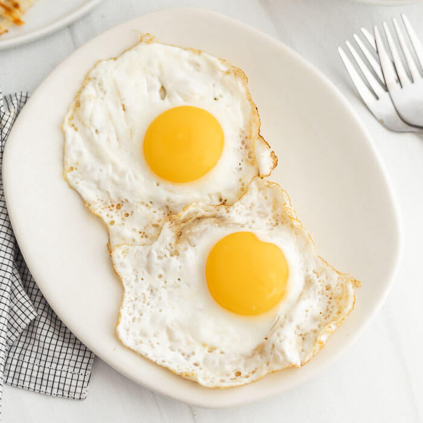

Home
Sunny Side Up Egg Recipe
Ingredients:
- 2 eggs
- 2 tablespoons butter
- Salt and pepper to taste
Instructions:
- Heat a non-stick skillet over low heat.

- Add 1 tablespoon of butter to the skillet and let it melt.
- Crack one egg gently into the skillet, keeping the yolk intact.
- Season the egg with salt and pepper to taste.
- Cook the egg on low heat until the whites are set, and the yolk is still runny. This should take about 2-3 minutes.
- Remove the sunny side up egg from the skillet and place it on a plate.
- Repeat steps 2 to 6 for the second egg.
- Serve the sunny side up eggs hot and enjoy!
Serving Suggestion:
- Sunny side up eggs pair well with toast and sautéed vegetables.
- For a complete breakfast, add a side of fresh salad or fruit.